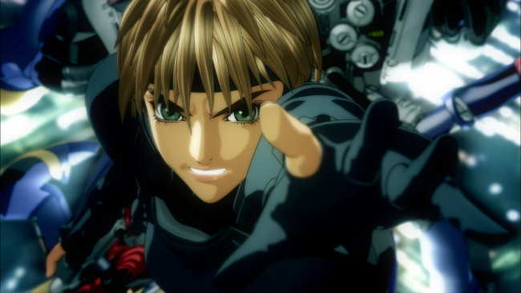
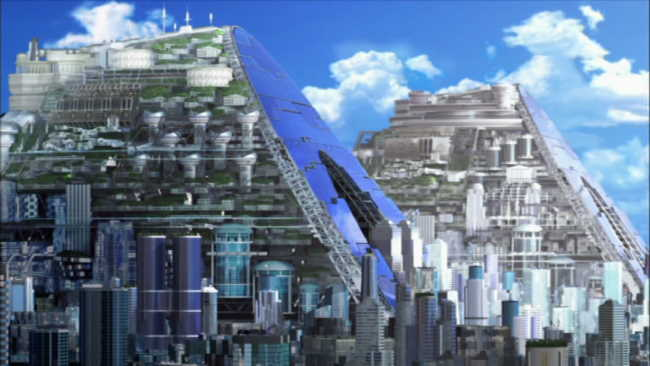
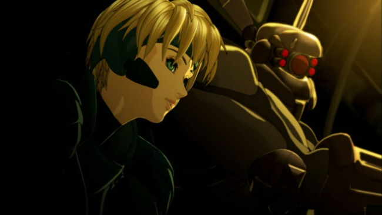
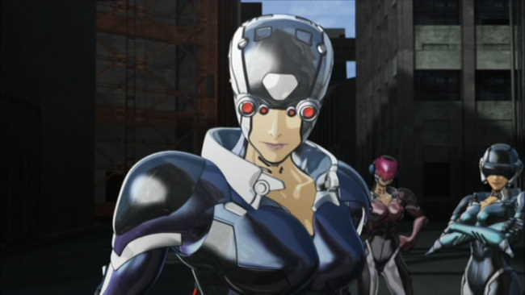
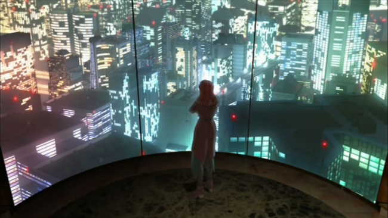
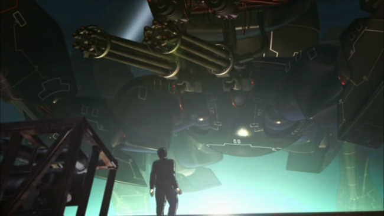
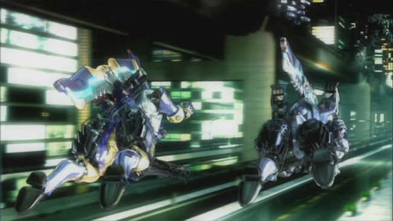
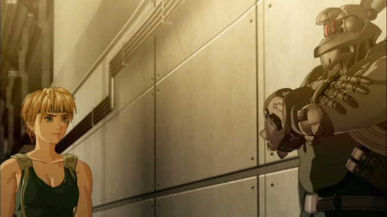
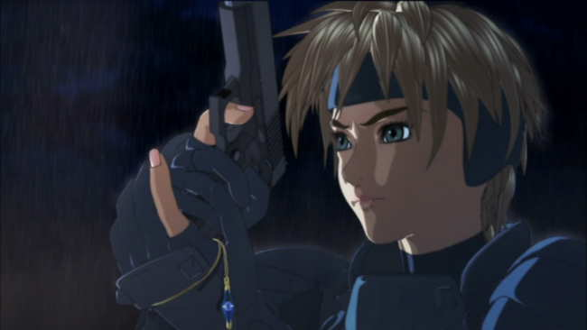

Movie review by : SFAM
Year : 2004
Directed by : Shinji Aramaki
Written by : Masamune Shirow (manga), Haruka Handa & Tsutomu Kamishiro (screenplay)
Degree of Cyberpunk visuals : Very High
Correlation to Cyberpunk themes : Medium
Rating : 6/10
Key cast members :

Overview: Masamune Shirow's Appleseed recently got a second anime treatment. The last was in 1988 ? this time, in 2004, the anime is done up in eye-popping 3D graphics. With a budget of only 10 million as compared to over 90 million for a movie like The Incredibles, we shouldn't be expecting too much. Surprisingly, we get far more than expected, especially with regards to the wonderfuly rendered backgrounds. While the animation is interesting enough, the story is more problematic. So too are the change in the feel of the characters. This is really where the original version succeeds far better than Aramaki's version.

The Story: Appleseed takes place in the year 2131, a war-ravaged dystopian future where most all of human society is in ruins. Over two years after the last war, the only example of advanced human civilization is a newly made city called Olympia, which has been engineered to be a created as a perfect refuge from the rest of the world. Over half of the city's inhabitants are comprised of bio-engineered "biodroids", which are human-like beings designed to serve specific roles in the society. An all-knowing computer named GIA supports the city council in controlling all aspects of city life.

Deunan Knute, a fighter extraordinaire has been living alone in the wastelands, not realizing that the war is over. She is beset by two warring groups of fighters, one of which who is trying to kill her, and the other group, which rescues her and takes her to Olympia. There she is re-acquainted with her long lost lover, Briareos, who now has been transformed into a cyborg after his body was lost in the war. She is tasked to join "ESWAT", a special mecha-enabled police force that keeps order within the city. Deunan also befriends a biodroid named Hitomi, who shows her around the city. Unfortunately, Deunan barely gets a chance to settle down before the assassination attempts on her life start.

Duenan quickly learns that she has been dropped in the middle of a power struggle between humans, who are concerned that the biodroids secretly aim to exterminate them, and biodroids, who worry the same about the humans. Somehow, Deunan has become essential in this struggle, yet it has nothing to do with her fighting capabilities. It turns out that her parents, before dying, developed a method for biodroids to reproduce, which would make them almost exactly like humans. But this research was lost long ago. Now, Deunan has become a pawn for both sides of this struggle, and worse, it appears as if her ex-lover, Briareos has chosen sides.

Unfortunately, the story in this version of Appleseed is problematic at best. There are too many sub-plots that obfuscate the key points. The myriad of loose ends introduced that are never followed up on. Gia, the sentient computer that runs Olympus is the probably the worst casualty. We get introduced to her, and, if you know something of the Appleseed story from the manga, you expect to see lots more than what actually ends up being conveyed. In the end, the plot centers on a simple theme of racism. This is a shame as there were so many interesting cyberpunk aspects of Olympus that get short-circuited.

The Animation: Appleseed's backgrounds are wonderfully rendered. This more than anything accounts for the majority of the "wows" Appleseed received. They are done in a way that allows 3D camera maneuvering, so as to allow you to see the same scene from multiple angles, and at times, even provides Matrix bullet-time effects. For the most part, the 3D CG overlaid with 2D cell shading really works. It's an extension of the idea we saw in Malice@Doll, only with far better rendering tools. The machines look especially awesome. Both the Gunhed style tanks at the beginning of the movie and the platform sentinels at the end. Unlike many cyberpunk movies, there isn't a dominating color palette in Appleseed, but the color scheme seems to stick more often than not to light and dark shades blue-greens, with yellow & browns in transition scenes.

In terms of the characters, only Deunan Knute really looks polished. Her body movements, facial expressions and general actions really work. The rest, especially the human characters, often look stilted in their moments. Hitomi, their biodroid friend, is especially problematic at times. This might be due more to the motion-capture techniques they use, which work wonderfully for the city, but not so well for the characters. Also, I really dislike the way they animated the hair. The hair on the humans in the 2004 edition look like something out of Reboot. However, considering the budget, I think they made the right decision in spending scarce resources on Deunan. Had they just made everyone look slightly better, Appleseed would have faltered horribly. By at least making Deunan polished, they developed a star that fit right alongside their wonderful backgrounds.

The Sound: Many times throughout the anime, Appleseed plays more like a music video than it does a movie. The modern heavy rock beats worked well for the action scenes. And truly, the action scenes are where Appleseed excels. There, the 3D positional sound, the music accompaniment and the 3D CG graphics are at their absolute best. The accompanying score really wasn't all the memorable, but at least served up the slower paced moods fairly well.

Differences From Shirow's Work: While both animes deviate from Masamune Shirow's Appleseed manga, Aramaki's version is the most egregious. While the 2004 version starts outside of Olympia as the manga does, it only has Duenan there, whereas in the manga has both. This version introduces a new dramatic twist of Duenan and Briareos getting back together for the first time in two years. While this in itself isn't bad, the side-effect is: these two characters are no NOTHING like the manga. The Duenan Knute and Briareos of Shirow's manga, and of the 1988 version, are precursors to the Ghost in the Shell's Motoko and Batou. Here, Briareos is a moody, lost soul trying to deal with his cyborg body, and Duenan is far more vulnerable than tough. The playful chemistry we see between these two both in the manga and the 1988 anime is completely missing here. For those who aren't familiar with the manga, this probably won't bug you, but it certainly sapped some of the enjoyment out of this movie for me ? so much so that I'm dropping a star off the review for it.

The Bottom Line: Appleseed is definitely worth seeing for the visuals alone. While some of the characters don't work, the Duenan, the machines and the action scenes work wonderfully. Unfortunately, the story doesn't equal up. Too many elements are introduced and then discarded in favor of a truly simplistic storyline. They could have done better. Also, as I mention above, this is not the Deunan and Briareos I've become familiar with ? these characters are different from both the manga and the earlier anime. This bugged me enough to drop a star from the review, but you might not mind so much.